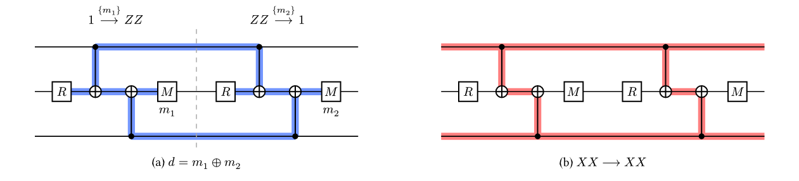
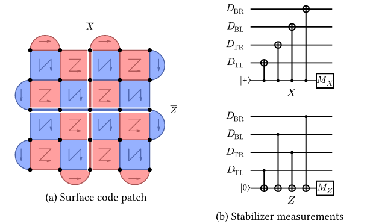
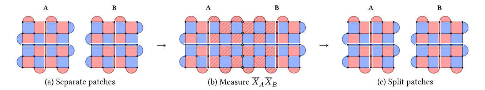
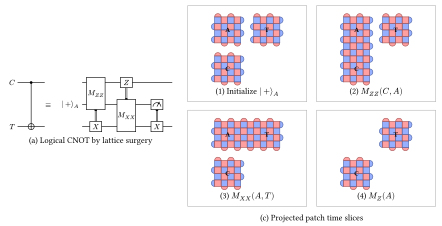
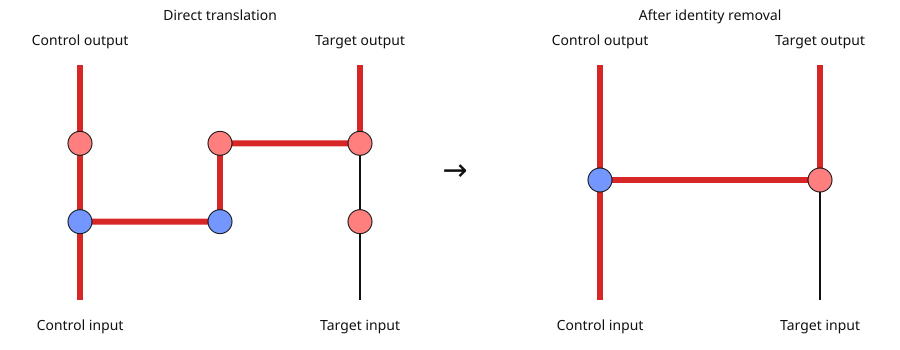
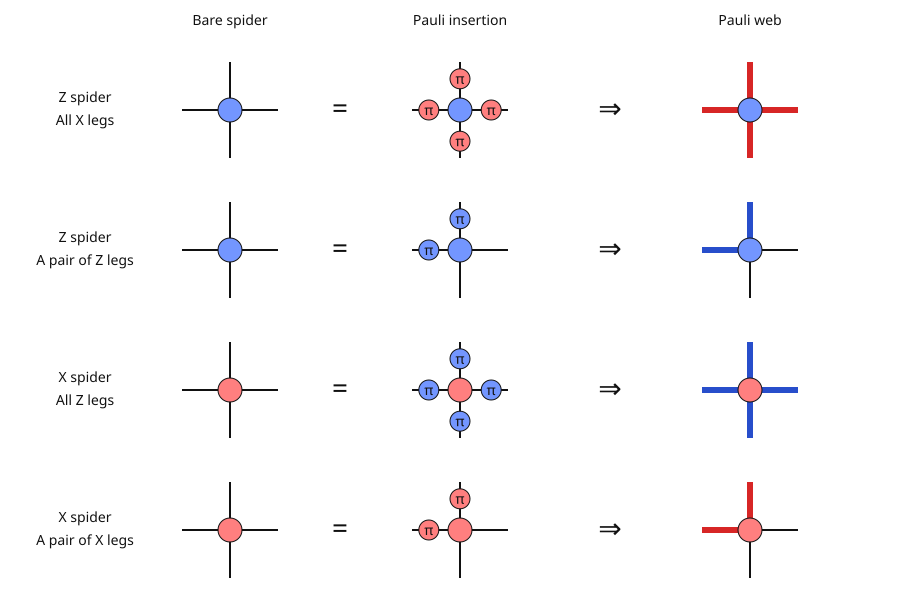

Preliminaries¶
This chapter reviews the surface code background used throughout the guide.
Pauli operators and stabilizer codes¶
A Pauli string is a tensor product of \(I\), \(X\), \(Y\), and \(Z\), with an overall phase. Ignoring phase, its support is a pair of binary vectors \((x,z)\):
Operator on one qubit |
\(x\) |
\(z\) |
|---|---|---|
\(I\) |
0 |
0 |
\(X\) |
1 |
0 |
\(Z\) |
0 |
1 |
\(Y\) |
1 |
1 |
Two strings commute when \(x\cdot z'+z\cdot x'=0\pmod 2\) and anticommute when it is one. Support combines by XOR, but signs still matter: \((X\otimes X)(Z\otimes Z)=-Y\otimes Y\).
A stabilizer code stores information in the shared \(+1\) eigenspace of commuting Pauli operators. With \(n-k\) independent stabilizers on \(n\) physical qubits, this space encodes \(k\) logical qubits. Logical operators preserve the code space and act on that encoded information. Multiplying one by a stabilizer changes its physical support without changing its logical action.[1]
The code distance \(d\) is the smallest weight of a nontrivial logical operator. With ideal stabilizer measurements, a distance-\(d\) code corrects arbitrary errors on up to \(\lfloor(d-1)/2\rfloor\) physical qubits. Real circuits also have errors in gates, resets, measurements, and idles, so we repeatedly extract a syndrome and use a decoder to interpret it.
Flows, detectors, and logical observables¶
A stabilizer flow \(A\xrightarrow{M}B\) relates a Pauli operator before a circuit fragment to one after it. Measurement records in \(M\) determine its sign. Consecutive flows compose when their intermediate operators agree:
Here \(\triangle\) is symmetric difference: a measurement appearing twice cancels in the XOR parity.[2][3]

Two measurements of \(ZZ\) give a detector \(m_1\oplus m_2\). The same circuit preserves the logical operator \(XX\). Blue and red shading show their detecting regions. This small example detects a bit flip.¶
A detector closes a flow with empty input and output Pauli support. Its measurement parity has a known value in the noiseless circuit. Including that reference constant \(c\), its detection-event bit is
For example, two consecutive measurements of a preserved stabilizer have \(\delta=m_1\oplus m_2\). Both records can be one while the detector is zero. A logical observable instead tracks an encoded operator. Its flow can have open quantum boundaries, and a logical measurement can be random even without errors.
A detecting region follows a flow through the circuit with a Pauli label at each location. An error flips the relation when it anticommutes with that label. An \(X\) error flips a \(Z\)-labeled region, for example. A detector error model (DEM) records each error mechanism’s probability and which detectors and logical observables it flips. A decoder uses the detector record to predict the logical flips.[2][4]
Important
Code distance and circuit distance describe different things. Circuit distance counts the fewest physical error mechanisms that can flip a logical observable without firing a detector. A single ancilla error can spread through several gates as a hook error and reduce this distance. The extraction schedule matters as much as the patch geometry.[5]
Surface code and lattice surgery¶
A rotated surface code patch encodes one logical qubit in \(d^2\) data qubits, with \(d^2-1\) independent local \(X\) and \(Z\) stabilizers. Ancillas measure these checks repeatedly. One ordinary extraction round consists of ancilla initialization, four CNOT layers, and ancilla measurement.[6]

A distance-five patch and its physical circuits. Red denotes \(X\) and blue denotes \(Z\). The CNOT order directs hook errors away from the corresponding shortest logical strings.¶
Bloq names boundaries by their stabilizer basis. In the patch above, \(\overline X\) runs vertically between the \(X\) boundaries and \(\overline Z\) runs horizontally between the \(Z\) boundaries. The strings cross on one data qubit, so they anticommute. Stabilizer multiplication lets us deform their paths.
Lattice surgery measures a joint logical operator by merging neighboring patches and then splitting them. For \(P=X\) or \(Z\), the ideal measurement has projectors
It learns the joint eigenvalue without resolving the two individual logical values. Stabilizers spanning the seam supply this parity. Repeating the merged checks, usually for \(d\) rounds, protects it against measurement errors. Preparation, joint measurements, and final readout together implement gates such as CNOT.[7][8]

Lattice surgery measures \(\overline X_A\overline X_B\): (a) two separate patches, (b) the merged patch with checks spanning the seam, and (c) the split patches.¶
Hadamard gates exchange logical \(X\) and \(Z\); logical \(Y\) preparation and measurement support phase-gate teleportation.[9] These operations provide Clifford computation. Resource states and gate teleportation implement non-Clifford gates in surface code computation, enabling universal quantum computation.[10] For example, the T resource state is
Clifford gates and measurements can consume this state to teleport a T gate,
with a correction selected by the decoded measurement. Distillation combines
noisy magic states into fewer states of higher fidelity.[11] Cultivation tests
and postselects a candidate while growing its protecting code.[3] Bloq’s T block
uses cultivation and a lattice-surgery escape into a rotated surface code patch.[12]
Pipe diagrams¶
A pipe diagram represents the region swept out by patches in two spatial dimensions and one time dimension.[13] In Bloq, \(x\) and \(y\) are spatial and \(z\) is time. Time follows the positive Z axis, marked by the viewer’s XYZ helper.
Diagram element |
Meaning |
|---|---|
Cube |
A patch maintained through syndrome extraction |
Temporal pipe |
Continue a patch into another time layer |
Spatial pipe |
Join patches for lattice surgery |
Closed temporal face |
Initialize or measure in the face’s basis |
Open port |
Retain a logical input or output |

The circuit and patch slices complement the interactive pipe diagram above. An ancilla starts in \(|+\rangle\), joins the control for a \(ZZ\) measurement, joins the target for an \(XX\) measurement, and ends in a \(Z\) readout. Measurement-dependent Pauli corrections are omitted from the pipe diagram.¶
The diagram is distance agnostic: the same layout describes a family of physical circuits. Choosing \(d\) sets the patch size; an ordinary cube uses \(d\) extraction rounds. Extensions beyond ordinary cubes and pipes include Y blocks for logical Y-basis preparation and measurement, Hadamard pipes that exchange logical X and Z, and T blocks for resource-state preparation. The Blocks and Pipes chapter introduces these elements and the source API.
Correlation surfaces¶
A correlation surface represents the stabilizer flow of a logical observable within a pipe diagram. It traces how logical operators evolve through the computation: its intersections with input and output ports specify the boundary logical operators, and its support in measurement regions identifies the flow’s measurement set \(M\).[13]
Correlation surfaces serve three purposes:
Determine the logical action. Their unsigned boundary relations determine the logical Clifford operation up to Pauli byproducts.
Track Pauli byproducts. Their measurement parities and decoder-predicted flips determine the output Pauli frame.
Define logical observables for decoding. Their flows specify protected logical relations; the corresponding detecting regions identify which physical errors flip those observables.
For CNOT, the four generating surfaces give these boundary relations, with measurement-dependent signs omitted:
Input |
Output |
|---|---|
\(\overline X_C\) |
\(\overline X_C\overline X_T\) |
\(\overline Z_C\) |
\(\overline Z_C\) |
\(\overline X_T\) |
\(\overline X_T\) |
\(\overline Z_T\) |
\(\overline Z_C\overline Z_T\) |
For the first surface, the input \(\overline X_C\) string extends through the ancilla and surgery seams, then reaches both outputs as \(\overline X_C\overline X_T\). Measurements where that string crosses a split or merge contribute to its surface parity \(q_{X_C}\).
The measured parity \(q_P\) and decoder-predicted flip determine a corrected parity \(q'_P=q_P\oplus[D(\delta)]_P\). These corrected relations determine the output Pauli frame. A surface can have an empty measurement set and still be sensitive to noise; a zero raw parity does not imply a zero decoder correction. See Correlation Surfaces for the complete signed relations and their use in readouts.
ZX Calculus¶
The ZX calculus gives an algebraic view of the pipe diagram. A Z-type cube (one Z-labeled pair of opposite faces and two X-labeled pairs) maps to a zero-phase Z spider; exchanging X and Z gives an X-type cube and an X spider. Each incident pipe contributes one spider leg, pipes become edges, and ports become boundary legs. Correlation surfaces become Pauli webs on those edges.[14][15]
Blue dots denote Z spiders and red dots denote X spiders; an unlabeled dot has zero phase.
The same CNOT graph maps directly to the left diagram below. Its red Pauli web represents \(X_C\to X_CX_T\). Removing the four two-leg identity spiders gives the standard CNOT diagram on the right, with the same boundary relation:

Direct translation and simplification of the CNOT graph. The highlighted web connects the control input to the control and target outputs.¶
The local rules below apply to zero-phase spiders of any degree; the diagrams use four legs. In the middle column, a two-leg X spider with phase \(\pi\) represents a Pauli X, and a two-leg Z spider with phase \(\pi\) represents a Pauli Z. The right column shows their support as a web.[15]

A zero-phase spider is unchanged by the Pauli insertions shown. Red web lines carry X support and blue web lines carry Z support.¶
Z spider: X support occupies all legs or none; Z support occupies an even number of legs.
X spider: exchange X and Z in that rule.
Compose: match Pauli labels on connected legs. Combining webs cancels repeated support of the same basis; overlapping X and Z components give Y support, with the phase tracked in the complete Pauli relation.
Correlation surfaces in pipe diagrams and Pauli webs in ZX diagrams follow the same underlying algebraic rules for mapping logical operators. A surface’s support through a cube becomes the web’s support on the corresponding spider legs, preserving the boundary logical relation. This connects the two diagram representations closely and lets ZX rewrites verify the logical Clifford action up to Pauli byproducts. Measurement parities and their signs remain part of the complete logical-observable flow tracked by Bloq.